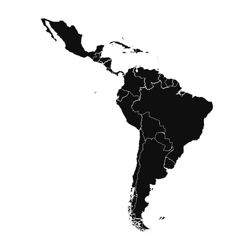

Higher education in Latin America Higher education in Latin America is divided into two categories: private and public. Most countries manage both ways, but in some, one way is more common than the other. For example, in Chile, private universities are more common than public ones, whereas in Uruguay, public universities are more common, and in Colombia, public universities are just a little more common. The funding of private education depends 90% on enrollment, and public education depends on the government. Talking about Colombia, in recent years, the government has increased funding by 10.3 trillion pesos, and this has also increased the number of students who enroll in public universities. Another factor is socioeconomic strata; many families belong to strata one, two, and three, and in fewer cases, just one person or no one from those families enters university. The enrollment rate of students from socioeconomic strata 1, 2, and 3 in higher education is 27.7%, compared to 47.7% for students from strata 4, 5, and 6. Additionally, the dropout rate among low-strata students who do enter university exceeds 70%, while that of high-strata students is only 10%. The cost comparison, which also influences enrollment and dropout rates, is as follows, from most to least expensive: ● Universidad de los Andes (Medicine): $26,514,000 per semester. ● Instituto Tecnológico y de Estudios Superiores de Monterrey: $22,512,000 per semester. ● Pontificia Universidad Católica de Chile: $15,432,000 per semester. ● Universidad Nacional de Colombia: $363,000 to $2,905,000 per semester. ● Universidad Pedagógica Nacional: enrollment fee of $50,000. ● Universidad de São Paulo (USP): Free. So, I ask you guys: What should the next government do to reduce the dropout rate among low-strata students? Have you ever thought about dropping out of university? Why?